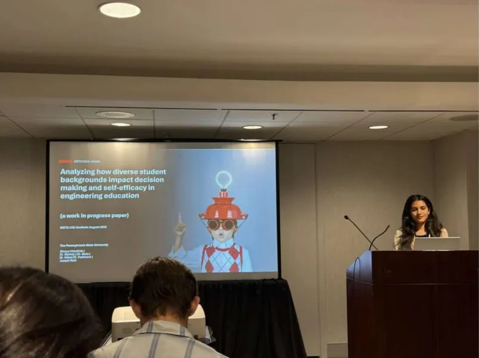
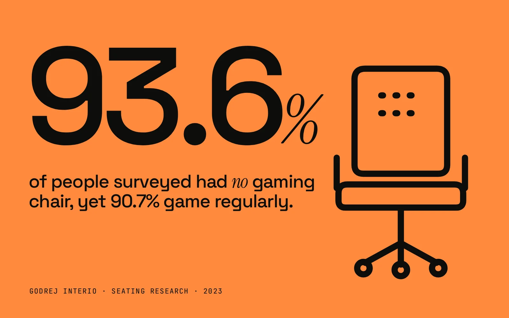
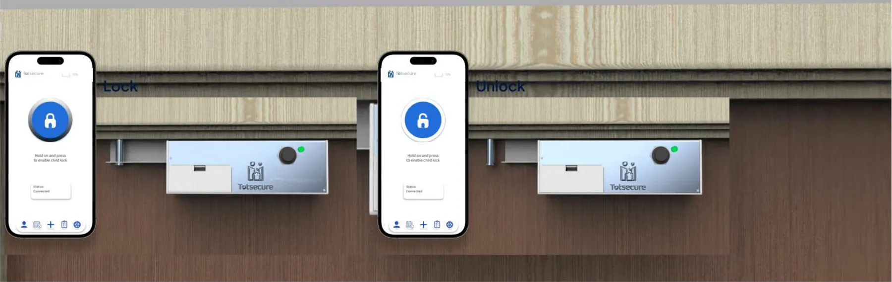
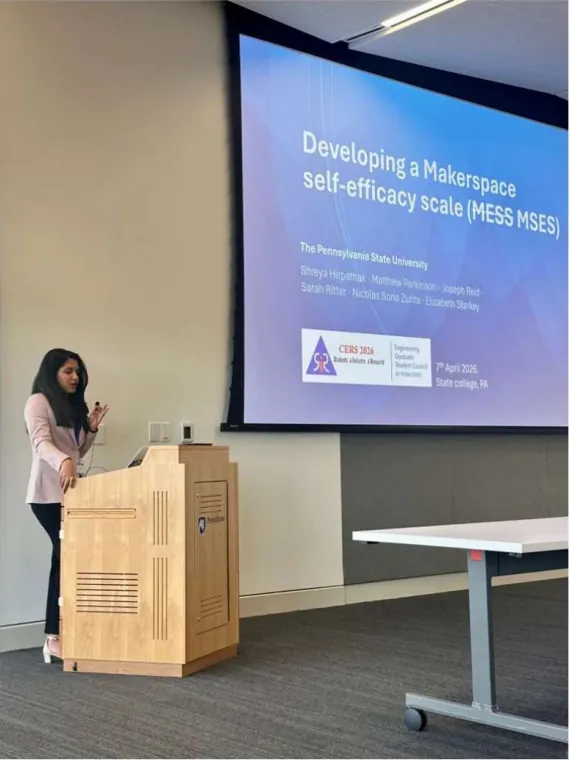

Immerse
I go where the work happens and watch before I ask. The real problem is rarely the one in the brief.

Field note 01Whiteboards are where hunches turn into hypotheses. (It's usually Option 3.)
Field note 02This watch doubled as my decibel meter for the lattice acoustics experiment.
Field note 03Where 1,910 student survey responses got cleaned, coded and questioned.
Hospital wards, pharma labs, family homes, university makerspaces. I bring an engineering designer's hands to a researcher's curiosity, so my insights end up as working products, not slide decks.
first-year engineering students surveyed for my thesis research
item Makerspace Self-Efficacy Scale I co-authored and validated
place Best Paper, ASME IDETC-CIE 2026
engineering students taught design, prototyping & CAD as a TA

I co-authored a new, validated scale for how capable engineering students feel at every stage of making, then used it to show where students' backgrounds shape that confidence.
How confident are you that you could…
…come up with an idea for something to build?
…make a first prototype with a 3D printer or laser cutter?
…fix it when the prototype fails?



“Creating a MSES: Developing the Makerspace Self-Efficacy Scale” (IDETC2026-190931). Nominated for an ASME special-edition journal.
Abstract IDETC2025-169096: how students' diverse backgrounds influence design decisions and confidence in makerspaces.

Scale development for academic self-efficacy, connecting users' lived experiences to inclusive system design.
From Pune to Penn State, and everything in between.
← Scroll or drag the timeline →
Four moves I repeat on every project. Each one links to where I actually did it.
I go where the work happens and watch before I ask. The real problem is rarely the one in the brief.
Patterns, not anecdotes. I map tasks, loads, errors and root causes until the design opportunity is obvious.
Sketch fast, prototype rough, put it in someone's hands. Physical proofs of concept settle arguments quickly.
I'd rather be proven wrong by data than be confidently wrong. I design studies I can learn from either way.
Real findings from my projects, scattered like a synthesis wall. Drag them around, then hit Cluster to see the affinity map I'd make from them.

Click to shuffle · drag the stickers
“Ever since childhood, stories have held me in their grip. My storytelling grew from daydreaming into writing, dance and doodling, and eventually into prototypes, designs and research.”
Hi, I'm Shreya. I trained as an industrial designer (B.Des, MIT Institute of Design, Pune) and spent five internships building products, which means I've made the things that end up in usability reports. That's exactly why I moved toward research.
Now I'm finishing an M.S. in Engineering Design at Penn State ('26), studying how people's backgrounds shape their confidence and decisions. Along the way I've taught 520+ first-year engineers to prototype, and published at ASME IDETC-CIE twice.
I'm looking for UX Researcher / UX Designer roles where rigorous research and real making sit at the same table. Off the clock: trained Bharatanatyam dancer, national-park hiker, and professional asker of “but why?”
Arangetram, a diploma from T.M.V Pune, and Visharad from Gandharva Mahavidyalaya. Years of rehearsal taught me patience, rhythm, and how to read a room.
Noticing details is the same muscle as field research. I just point a camera instead of a clipboard.
An editorial publication exploring phantom limb pain, turning research into a story people can hold.
Catch the good research questions ("why?", "how?") and dodge the assumptions. 15 seconds.
Let's discuss design, books, opportunities and conspiracy theories.